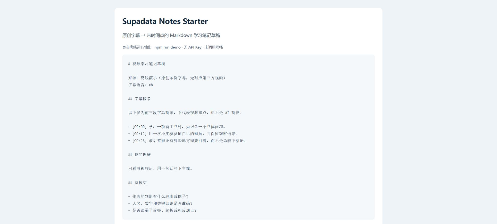

我做了一个字幕转学习笔记的小工具
比尔尝百草 · 2026 年 11 月 17 日
Supadata Notes Starter 是一个简单的开源工具：输入公开视频链接，取得已有字幕，保存为带时间点的 Markdown 学习笔记草稿。它把回看、核对和继续整理需要的材料准备好，不替你下结论。
Supadata 在里面做什么
在线模式通过官方 @supadata/js SDK 调用 Supadata transcript 接口，明确使用 mode=native、text=false，取得已有字幕和时间点。没有字幕就停止，不自动转为 AI 音频转写。字幕文本和笔记保存在运行者自己的电脑。
一次真实的离线输出
下面的截图来自实际运行 npm run demo 后生成的 study-note.md。原样输出放进简单的网页查看器，方便阅读。输入是仓库内原创的三段示例字幕，没有对应第三方视频，也没有调用 API。这展示的是笔记整理环节，不冒充真实视频的提炼结果。

可以看到 00:00、00:12、00:26 三个时间点，以及“我的理解”和“待核实”两个区域。前三段明确标为摘录，不等于视频重点，更不是 AI 总结。
自己试一下
下载开源模板，使用 Node.js 22.9 或更新版本，在目录中运行：
npm ci
npm run demo
离线演示不需要 API Key，也不消耗积分。输出是 output/demo/transcript.txt 和 output/demo/study-note.md。在线模式则需要在本机 .env 中填写自己的 SUPADATA_API_KEY，并产生相应 API 用量。不要把真实 Key 放进文章、截图或公开仓库。
查看输出预览 · 完整运行说明
推广披露：Supadata 入口是个人推广链接，作者可能通过 Supadata 内容奖励计划获得 API 积分。这里只公开独立模板和原创演示材料。